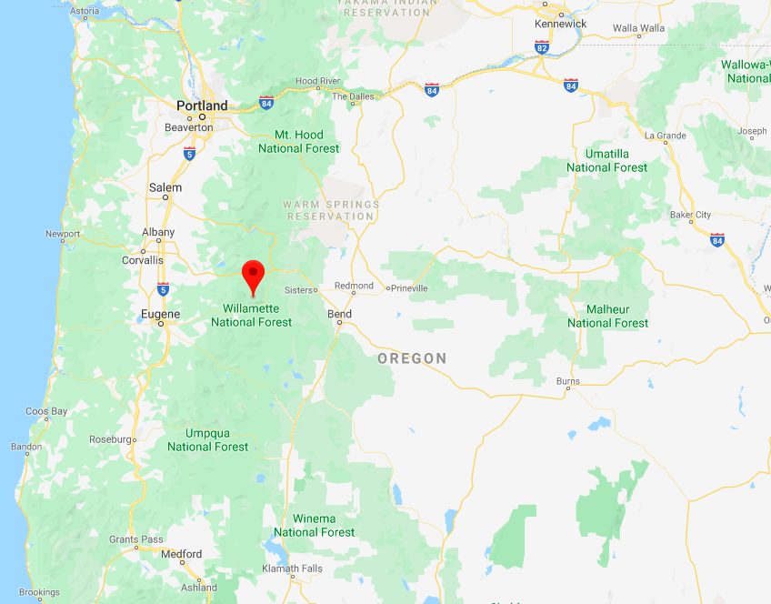

Pacific giant salamanders in Mack Creek: abundance and weight with forest sections and channel types
A report for ESM 206: Statistics and Data Analysis in Environmental Science and Management
Ruoyu Wang & Haley Grant
11/22/2019
Introduction
Around 1963, sections of forests near Mack Creek, Oregon were clear cut, meaning the trees were uniformly cut down (Gregory 2016). In 1993, Stanley V. Gregory and researchers at the Andrews Forest LTER Site began including Pacific giant salamanders (Dicamptodon tenebrosus) in their study called Aquatic Vertebrate Population Study in Mack Creek, Andrews Experimental Forest, 1987 to present. The researchers recorded the weights of salamanders (g) and documented their locations within the area. The two forest sections of Mack Creek include clear cut sections as well as 500-year-old coniferous old growth forests (Gregory 2016). Within the two sections of forests, salamanders are found in Cascade, Pool and Side Channel. This report does not include salamanders found in Isolated Pool, as these areas are separated from the creek. Studying the Pacific giant salamander population in this area is relevant to understanding how new forests- the result of clear cutting- affect local wildlife populations, and how these effects compare to populations living in old growth forests.

Figure. 1 Pacific giant salamander (Dicamptodon tenebrosus). Credit: Jeffrey Marsten. Wikipedia.
{kind=link}
Data and Methods
The data set used in this report was provided by the LTER Network Data Portal, and full metadata can be found here. Sections of the forest are specified as clear cut (“CC”) and old growth (“OG”), while channel types are specified as Cascade, “C”, Pool, “P”, and Side Channel, “SC”. A Chi-squared (\(\chi\)2) test was performed to determine if forest section was related to which channel type salamanders were found. Additionally, an unpaired two-sample t-test was used to find out if the weights of salamanders differed significantly between the two forest sections. Finally, a one-way ANOVA test was conducted to determine if there was a significant difference in mean salamander weight among the three channel types between the two forest sections. All analyses and figures were made using R Studio version 1.2.5001.

Figure. 2 Map of Oregon. The location of Mack Creek is designated by the red icon. Courtesy of Google Maps.
Results
A. Annual salamander population in two forest sections of Mack Creek.
Counts in clear cut forests tended to be less than counts in old growth forests until 2012.
 Figure. 3 Annual counts of salamanders in Mack Creek from 1993 to 2017. Clear cut forests were shown as orange dotted line, the old growth forests were presented as blue line with triangles. Data: Andrews Forest LTER Site.
Figure. 3 Annual counts of salamanders in Mack Creek from 1993 to 2017. Clear cut forests were shown as orange dotted line, the old growth forests were presented as blue line with triangles. Data: Andrews Forest LTER Site.
B. Salamander abundance by channel classification and forest sections in 2017.
Table. 1 Summary table of 2017 salamander population by channel classifications (Pool, Cascade and Side Channel) in old growth (OG) and clear cut (CC) sections of Mack Creek. Data: Andrews Forest LTER Site.
| Section | Cascade | Pool | Side Channel |
|---|---|---|---|
| Clear Cut | 247 (55%) | 31 (41%) | 90 (55%) |
| Old Growth | 201 (45%) | 45 (59%) | 74 (45%) |
The percentages show the proportions of salamanders in each channel type by section. For example, of the salamanders found in the cascade channel type, 55% were located in clear cut sections, while 45% were located in old growth sections.
C. Association between channel classifications and forest sections on mean salamander weights.
Is there a significant difference in where in the channel Pacific giant salamanders are located (pool, cascade or side channel) between the two sections (old growth and clear cut)?
Looking into the Table.1, we could find that the percentages difference of two different sections within the same channel are relatively small, and all the percentages are close to 50%. It is possible that there is no connections between the sections and the channels to the weights of salamanders.
We use Chi-Square (\(\chi\)2) test to compare proportions and find their inner relationship.
The Chi-Square (\(\chi\)2) test results indicate that the proportions of salamanders in each section and channel type are to be expected if forest section is not a determining factor in where salamanders were located in Mack Creek. In other words, there was no significant difference in forest section (clear cut / old growth) based on which channel type salamanders were found (\(\chi\)2(2) = 5.54, p (0.063) > 0.05).
D. The influence of forest sections on Pacific giant salamander weights.
 Figure. 4 Counts of salamanders by weight for old growth and clear cut forest sections in 2017. The orange dotted line indicates mean salamander weight for clear cut sections, while the blue dotted line indicates mean salamander weight for old growth sections. The means appear relatively close together. Data: Andrews Forest LTER Site.
Figure. 4 Counts of salamanders by weight for old growth and clear cut forest sections in 2017. The orange dotted line indicates mean salamander weight for clear cut sections, while the blue dotted line indicates mean salamander weight for old growth sections. The means appear relatively close together. Data: Andrews Forest LTER Site.
In year 2017, mean weight of Pacific giant salamanders (g) measured in clear cut forests (7.78 \(\pm\) 9.9, n = 368) was not significantly different from the average salamander weight in old growth forest areas (6.58 \(\pm\) 8.96, n = 328) by a unpaired two-sample t-test (t(692.79) = 1.67, p(0.096) > 0.05) . The difference in mean weight between the two groups is 1.20 g, with a negligible effect size (Cohen’s d = 0.13). Therefore, we consider the salamander weights in clear cut areas were not significantly different from old growth ones. Histogram was presented in Figure.4.
E. The influence of channel classifications on Pacific giant salamanders weights.
1. Visually compare Pacific giant salamander weights between the three channel classifications.

Figure. 5 The weight distribution, mean, and standard deviation graph of Pacific giant salamanders in channels- Pool(blue), Side Channel(pink), Cascade(green) in year 2017. Different colored points represent distribution of the samples’ weights. The grey points show the mean weights within each channel group (Side channel - 5.68, Pool - 9.3, and Cascade - 7.52), the error bars indicate the standard deviation of the data (Side channel - 8.27, Pool - 13.62, and Cascade - 9.03). Data: Andrews Forest LTER Site.
2. Is there a significant difference in mean weights for Pacific giant salamanders observed in Pool vs. Cascade vs. Side Channel in 2017?
Table. 2 The summary table for different channel classifications of mean weights in Pacific giant salamanders. Data: Andrews Forest LTER Site.| Channel | Mean | Standard Deviation | Standard Error | Variance | Sample Size |
|---|---|---|---|---|---|
| Cascade | 7.52 | 9.03 | 0.43 | 81.50 | 448 |
| Pool | 9.30 | 13.62 | 1.56 | 185.58 | 76 |
| Side Channel | 5.68 | 8.27 | 0.65 | 68.31 | 164 |
We adopted the one-way analysis of variance (ANOVA) to solve that problem.
This method is suitable because the data satisfies all assumptions for ANOVA:
The sample distribution should be normal. Through the beeswarm plot we could observe that most weights were concentrated at 0-6g. The data was presented as skewed to the left side. However, the sample sizes within each groups (Pool - 76, Cascade - 448, and Side channel - 164) are all more than 30, which could be considered as large enough. So the distributions of the sample statistics (mean, median) will be normally distributed.
Samples are independent. Due to the different locations of these three channels, the sample data collected from different places should be independent.
Population variances are equal. In the summary table (Table. 2), notice that the largest variance (Pool - 185.58) is less than the four times of the smallest variance (Side Channel - 68.31), which means the variances are close enough. Besides, based on the results from Levene’s Test (Levene’s F(2) = 2.39, p = 0.093 > 0.05), there is no significant difference in variances between groups.
In 2017, mean weight of Pacific giant salamanders (g) measured in Cascade area (7.52 \(\pm\) 9.03, n = 448)，in Pool area (9.3 \(\pm\) 13.62, n = 76), and in Side Channel area (5.68 \(\pm\) 8.27, n = 164) have significant difference in at least two groups from the average salamander weight by a one-way ANOVA (F(2, 684) = 4.22, p(0.015) < 0.05). Histogram presented in Figure.5.
To further study which groups differ significantly with each other, we analyzed with Tukey’s test for Honestly Significant Differences (Tukey’s HSD). The results showed that there is no significant difference between Pool and Cascade groups (p adj(0.286) > 0.05), and between Side Channel and Cascade groups (p adj(0.084) > 0.05), but the mean salamander weight differed significantly between Side Channel and Pool (p adj(0.017) < 0.05). However, the difference in mean weight between the Side Channel and Pool groups is 3.62 g, with a small effect size (Cohen’s d = 0.35). Though the two groups show difference in data, it is highly possible that it happened because of accidental errors. Therefore, more research needs to be done to determine whether the two groups are actually different significantly.
3. Limits about comparing means across the groups.
Mean is a measurement that is easily swayed by outliers, and it looks like the data has significant outliers. It may be more beneficial to also compare medians as well to make sure that outliers aren’t affecting the accuracy of our results. This could be done through rank-based tests.
Summary
- Channel locations and sampling forest sections are independent (Table. 1).
- The mean weight of salamanders in old growth and clear cut sections of the forest were not significantly different in 2017 (Figure. 4).
- Within the three channels, the mean salamander weight differed significantly between Side Channel and Pool, but not with other groups (Figure. 5).
References
Gregory S. V. 2016. Aquatic Vertebrate Population Study in Mack Creek, Andrews Experimental Forest, 1987 to present. Environmental Data Initiative. https://doi.org/10.6073/pasta/5de64af9c11579266ef20da2ff32f702. Data set accessed 12/03/19.
王若宇
环境科学与管理硕士研究生
Her interests lie in energy and climate change, pollution, prevention and remediation and applications of data science in environmental studies.